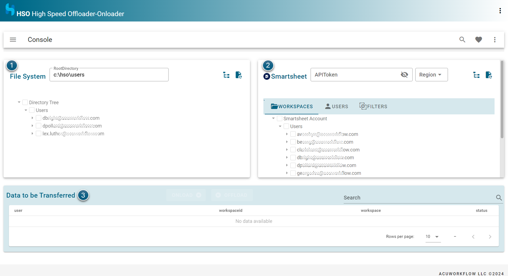
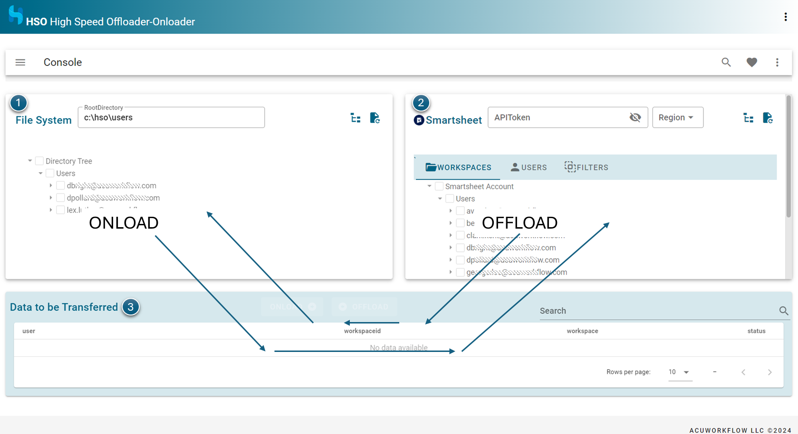
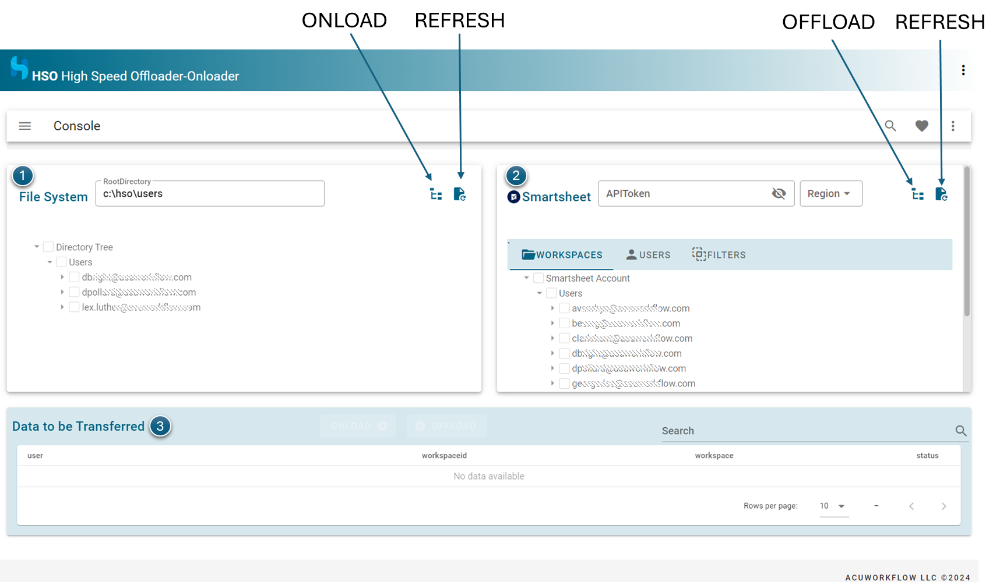
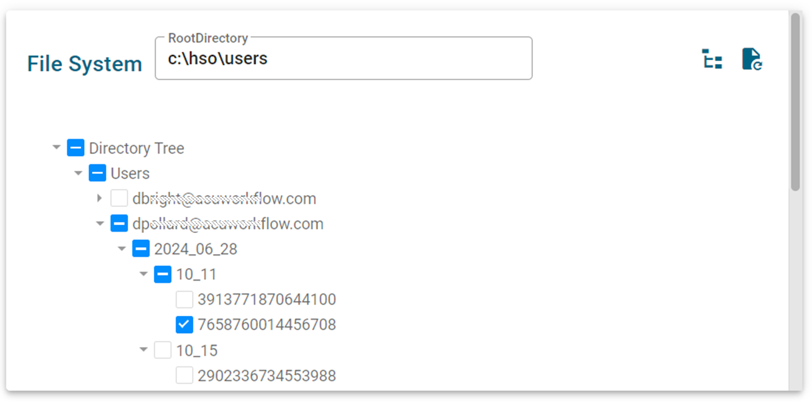
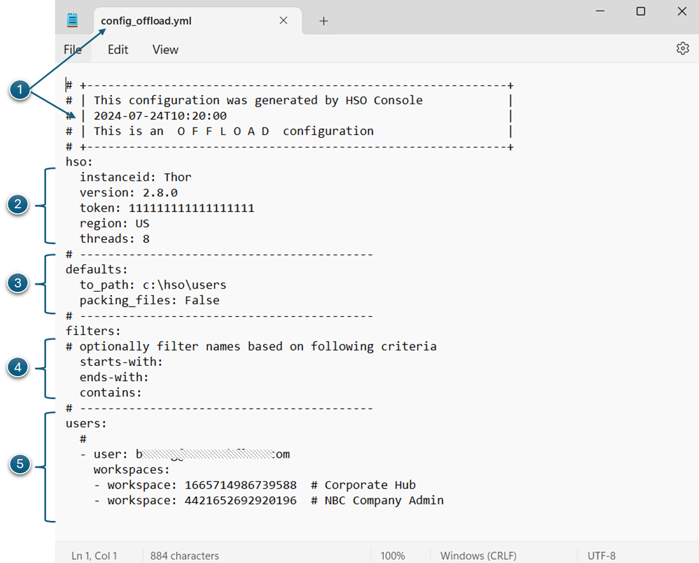

User Guide
HSO is a data movement platform for rapidly moving data from and to Smartsheet at workspace level.
It comprises of the following components:
- GUI for online UI and ease of use
- Config Files to steer what needs to be on or offloaded
- HSOffloader for moving data out of Smartsheet
- HSOnloader for moving data into Smartsheet
HSO GUI
HSO can be configured, managed and run via the HSO GUI. It can also be run head-less which mean without a GUI. head-less mode most often use when you want to run HSOffloader or HSOnloader via a schdeluer on regular intervals. In such cases one can still use the GUI to help create the configuration files but thereafter it is not needed anymore.

- Smartsheet Pane It shows your Smartsheet account where you want to
offload Smartsheet data fromoronload data from into Smartsheet. - FileSystem Pane It shows the designated area where you want to
offload Smartsheet data tooronload data from here into Smartsheet. - Data to be Transferred Shows which users and/or workspaces will be transferred
Usage
Primarily the HSO GUI is use to perform an OFFLOAD From Smartsheet to a File System or a ONLOAD from FileSystem to Smartsheet

This is done with two buttons for each environment.

- REFRESH Refresh list of Users and Workspaces from Smartsheet
- OFFLOAD Create offload config file based on selected data and other settings and show result in data to be transferred
- REFRESH Refresh list of User Workspaces from File System (e.g. previously offloaded workspaces)
- ONLOAD Create onload config file based on selected data and other settings and show result in data to be transferred
Smartsheet Pane
The right side of the screen shows a hierachical view of Smartsheet Account resolved by the APIToken Key. This view is similar to viewing the Account Structure in the Smartsheet UI, though an effort was made to simplify it a bit.

Selections of WHAT to offload is done by choosing any combination of:
- Workspaces Selected Workspaces from the Workspaces Tab and/or
- Users All workspaces for a given User/s from the Users Tab and/or
- Filter Include only certain Sheets matching criteria within from the Filters Tab
Workspaces
When selecting from the Workspaces tab you will see each Workspace is prefixed with its Smartsheet ID. This provides an easy way to ensure you are selecting the right workspace.
- Clicking the Refresh button, refresh the Smartsheet Users and Workspaces available. Only perform this when you view the latest information. It will take a couple of minutes to complete.
- Clicking the Data to be transferred button, creates a list of items ready to be transferred. Note this does not perform the on or offload operation yet.
File System Pane
The left side of the screen shows a hierachical view of the filesystem pointed to by the value in Rootdirectory. This view is similar to viewing the folders in Windows Explorer, though an effort was made to simplify it a bit.

Info
The root directory points to the root of the filesystem you are designated as the offload to or onload from area, Typically this is c:/hso/users.
- Clicking the Refresh button, refresh the directory tree from the file system. Perform this every time when a new root directory is supplied.
- Clicking the Data to be transferred button, creates a list of items ready to be transferred. Note this does not perform the on or offload operation yet.
Data to be transferred pane
The bottom of the screen shows a collection of data that will be transferred. The appropriate button will be shown depending if you are Offloading or Onloading

Clicking the Offload button on the Data to be transferred pane will show the following screen

Ensure the details are coorect, also calling out the following:
- Config File Name of the generated config file that will drive HSOffloader. Clicking on the icon will open Notepad and you can optionally edit the file.
- Offload to Ensure that the path you want to offload the Smartsheet data is the correct one.
- Sheets/Attachments Choose whether you want to offload Sheets or attachments
- Run Now Click on Run Now if you want to start HSOffloader. Optionally you can define a task in Windows Task scheduler to run it based on a schedule.
Config Files
Config files are yaml based files that drives the parameters neccessary for HSOffloader and HSOnloader to function. These are automatically generated by HSO GUI and you can optionally edit them at any time thereafter. If you are not familiar with yaml files, they are ordinary editable text files but the indentations shown should be observed using white spaces.

-
Top Section Shown is the config file name and a block of intro comments. # denotes a comment.
# +------------------------------------------------------------+ # | This configuration was generated by HSO Console | # | 2024-07-24T10:20:00 | # | This is an O F F L O A D configuration | # +------------------------------------------------------------+ -
HSO main section Ensure APIToken and Region are correct.
hso: instanceid: Thor version: 2.8.0 token: 111111111111111111 region: US threads: 8 -
defaults section These default values would be used.
defaults: to_path: c:\hso\users packing_files: False -
filters section Filter criteria.
filters: # optionally filter names based on following criteria starts-with: ends-with: contains: -
users section Specify what Users/workspaces should be offloaded.
-
Sample, specific workspaces that needs to be offloaded
users: # - user: jdoe@acme.com workspaces: - workspace: 1665714986739588 # Corporate Hub - workspace: 4421652692920196 # NBC Company Admin # -
Sample, offload all workspaces for a set of users
users: # - user: jdoe@acme.com - user: janedoe@acme.com - user: fgump@gumpco,com #
-
Smartsheet API Token
The Smartsheet API Token is recorded in the config files for use by HSOffLoader or HSOOnloader. Ensure these files are properly secured under admin control.
HSOffloader
To use HSOffloader, you need a destination and a Smartsheet API key. You also need to tell HSOffloader where the offloaded data should land. All of this is specified in the relevant config file.
You may choose how to run this
- Once off Ideal for a right now snapshot or dealing with a point-in-time workspace copy.
- Regular Intervals Ideal for planned schedules
It can be invoked in any of the following ways
- From the HSO GUI by clicking on the Run now button
- From Windows CLI by opening a Windows Terminal or CLI, then cd to the HSO apps directory and run hsoffloader
- From Windows Explorer by double clicking on hsoffloader icon
- From Windows Task Scheduler
HSOnloader
To use HSOnloader, you need a source and a Smartsheet API key. You also need to tell HSOnloader where the onloaded data should land. All of this is specified in the relevant config file.
You may choose how to run this
- Once off Ideal for a right now snapshot or dealing with a point-in-time workspace copy.
- Regular Intervals Not advisable unless your requirements dicate this
It can be invoked in any of the following ways
- From the HSO GUI by clicking on the Run now button
- From Windows CLI by opening a Windows Terminal or CLI, then cd to the HSO apps directory and run hsonloader
- From Windows Explorer by double clicking on hsonloader icon
- From Windows Task Scheduler